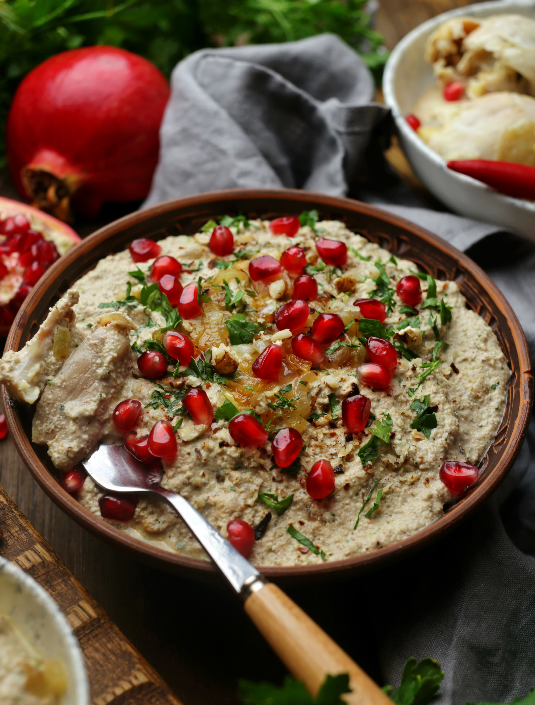

Это совершенно фантастическая история. Из простых продуктов и обычной варёной курицы готовится блюдо, от которого невозможно оторваться. Щедрая горсть или две, а лучше три, чего уж мелочиться, грецких орехов, хороший пучок кинзы, чеснок и обжаренный до золотистого цвета лук да щепотка специй вместе создают такой удивительный союз, что с ним затанцуют, запоют и заиграют не только птица, но и рыба, яйца, мясо, баклажаны и даже грибы. А как вкусно есть сациви с лавашом! Настоятельная рекомендация — ни в коем случае не заменять кинзу петрушкой. Даже если вам кажется, что они внешне похожи, а кинзу вы не очень любите... Нет. Пожалуйста. Классическое сочетание грецких орехов, чеснока и кинзы родилось не просто так и влюбит в себя каждого. Как всегда, история про сациви своя у любого кулинара, все рецепты безупречные и самые правильные. Курицу можно отварить до мягкости и залить соусом, или сначала отварить до полуготовности, а затем запечь в духовке 30–40 минут, или обжарить кусочки курицы в топлёном масле с луком, а затем потомить в соусе. Не обязательно брать целую курицу, можно использовать её части, но непременно после того как отварили удалить все косточки и кожу. Можно заменить курицу индейкой. Сациви обязательно надо дать настояться несколько часов, и чем дольше, тем лучше. Подают блюдо холодным.